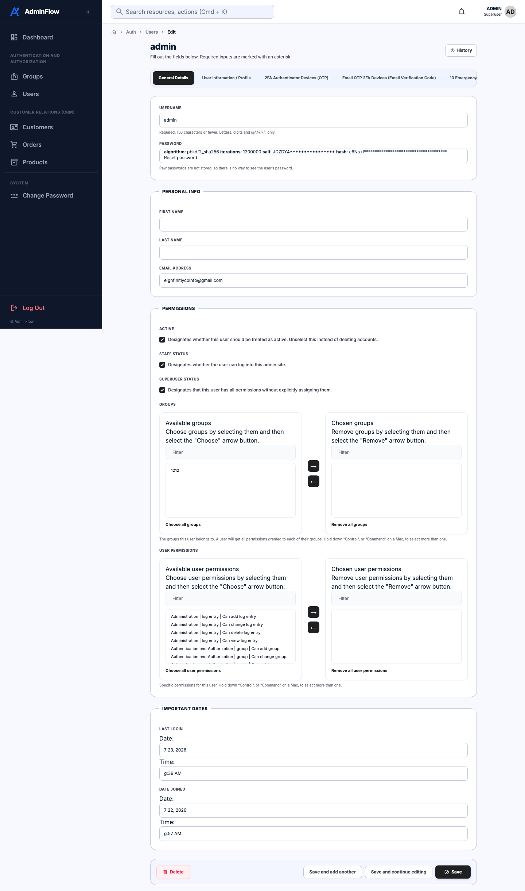

Two-Factor Authentication
AdminFlow wraps django-otp with a polished UI: a styled OTP verification page on login, per-device management inside the user admin, and bulk admin actions for enabling 2FA across your team.
Requirements
pip install "django-adminflow[otp]"
Add to INSTALLED_APPS:
INSTALLED_APPS = [
"adminflow",
"django.contrib.admin",
...
"django_otp",
"django_otp.plugins.otp_totp", # TOTP — Google Authenticator, Authy, etc.
"django_otp.plugins.otp_email", # email one-time passwords
"django_otp.plugins.otp_static", # backup codes
]
Add the OTP middleware after AuthenticationMiddleware:
MIDDLEWARE = [
...
"django.contrib.auth.middleware.AuthenticationMiddleware",
"django_otp.middleware.OTPMiddleware", # ← add this
...
]
Run migrations:
python manage.py migrate
Setting Up the User Admin
Replace the default UserAdmin with AdminFlow’s version to get the 2FA management UI:
# admin.py
from django.contrib import admin
from django.contrib.auth import get_user_model
from django.contrib.auth.admin import UserAdmin as BaseUserAdmin
from adminflow.user_admin import (
AdminFlowUserAdminMixin,
get_2fa_inlines,
unregister_otp_models,
)
User = get_user_model()
@admin.register(User)
class UserAdmin(AdminFlowUserAdminMixin, BaseUserAdmin):
inlines = get_2fa_inlines()
# Remove the raw django-otp device admin entries
unregister_otp_models()
How It Works
Login Flow
User enters username + password on the login page
If they have a confirmed OTP device → AdminFlow shows the OTP verification screen
User enters the 6-digit code from their authenticator app (or email, or backup code)
On success → redirected to the admin dashboard

User 2FA Management
In the user change form, staff users see a Security section with their registered devices:

Supported device types:
Device Type |
Description |
|---|---|
TOTP ( |
Time-based 6-digit codes. Works with Google Authenticator, Authy, 1Password, etc. |
Email OTP ( |
One-time codes sent to the user’s email address |
Backup Codes ( |
Single-use 8-character codes for account recovery |
Admin Bulk Actions
Select users in the user list and use the Actions dropdown:
Enable 2FA for selected users — creates email OTP devices for selected users
Generate 10 backup codes — creates static backup codes for selected users
Email OTP Settings
If using email OTP, configure your email backend in settings.py:
EMAIL_BACKEND = "django.core.mail.backends.smtp.EmailBackend"
EMAIL_HOST = "smtp.example.com"
EMAIL_PORT = 587
EMAIL_USE_TLS = True
EMAIL_HOST_USER = "noreply@example.com"
EMAIL_HOST_PASSWORD = "your-smtp-password"
Disabling 2FA Requirement
To allow staff to log in without 2FA (e.g., during development):
# settings.py
OTP_ADMIN_HIDE_SENSITIVE_DATA = False # default — 2FA is optional not enforced
To enforce 2FA for all admin logins, override has_permission in your admin site.